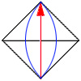
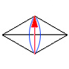

Lune Tree
- XLogo
Trees are drawn using 'lunes', a lobe like shape. This gives quite a different appearance and a continueous curve through the tree branches. Lunes are used matching the branch angle of 60 or 90 degrees.
To New
# set default screen, pen and turtle values
ResetAll SetScreenSize [400 400] HideTurtle
SetSC Black SetPC Green SetPS 1 PenUp
End
To Init
# make Angle and Scale global values
GlobalMake "Angle 90
GlobalMake "Scale 2
End
To Tree :Size :Order
If :Order < 0 [Stop] # ends recursion if order < 0
Forward :Size/2
Left 90 Lens :Angle :Size Right 90
SetPC DarkRed Fill SetPC Green
Forward :Size/2 Left :Angle
Tree :Size/:Scale :Order-1 Right :Angle
Tree :Size/:Scale :Order-1 Right :Angle
Tree :Size/:Scale :Order-1 Left :Angle
Back :Size
End
To Arch :Angle :Radius
# symmetrical arc drawn relative to turtle heading
Arc :Radius Heading-:Angle/2
Heading+:Angle/2
End
To Lens :Size
# lens shape drawn from centre (tp)
Repeat 2 [
Back :Size/2 Arch 90 :Size/1.414
Forward :Size/2 Left 180]
End
To Go :Order
New Init Back 192
Tree 200 :Order
End
To GoX
New Init Left 45 Repeat 4 [
Tree 140 4 Right 90]
End
Type gox or go order for example go 3 to run.
Just a few changes produces a 60 degree angle tree.
To New
# set default screen, pen and turtle values
ResetAll SetScreenSize [400 400] HideTurtle
SetSC Black SetPC Green SetPS 1 PenUp
End
To Init
# make Angle and Scale global values
GlobalMake "Angle 60
GlobalMake "Scale 1.5
End
To Tree :Size :Order
If :Order < 0 [Stop] # ends recursion if order < 0
Forward :Size/2
Left 90 Lens60 :Angle :Size Right 90
SetPC DarkRed Fill SetPC Green
Forward :Size/2 Left :Angle
Tree :Size/:Scale :Order-1 Right 2*:Angle
Tree :Size/:Scale :Order-1 Left :Angle
Back :Size
End
To Arch :Angle :Radius
# symmetrical arc drawn relative to turtle heading
Arc :Radius Heading-:Angle/2
Heading+:Angle/2
End
To Lens60 :Size
# lens shape drawn from centre (tp)
Repeat 2 [
Back :Size Arch 60 :Size
Forward :Size Left 180]
End
To Go :Order
New Init Back 160
Tree 128 :Order
End
To GoX
New Init Back 15 Repeat 3 [
Tree 86 4 Right 120]
End
Type gox or go order for example go 3 to run.
- Animation
- Art
- Cellular Auto
- Coding
- Demo
- Dot Plot
- Fractal
- Grid
- Illusion
- L-System
- Multi Turtle
- One Line
- Perspective
- Plane Filling
- Polar
- Puzzle
- Recursion
- Sound
- Spiral
- Spirograph
- Trees
- Walks


Lune 90

Lune 60



Kite Tree
Procedures blue
Variables pink
Comments green
Library gray

Visit XLogo
web site